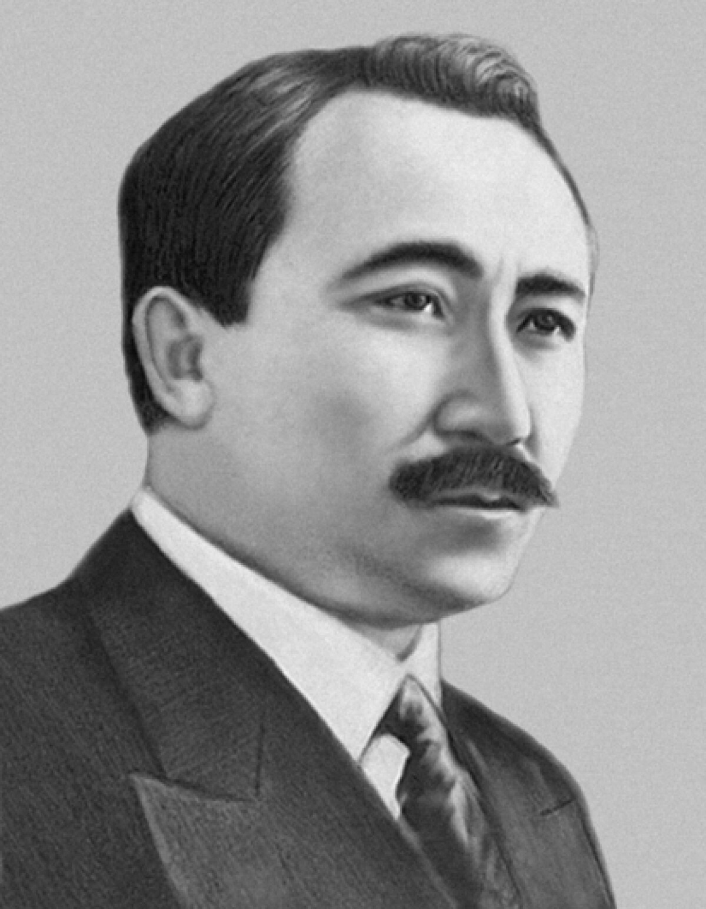

Tragic End and Rehabilitation
In , Saken Seifullin fell victim to political repression and was executed in . He was later posthumously rehabilitated, and his works remain a cornerstone of national cultural heritage.
 THE STATE MUSEUM
THE STATE MUSEUM Saken Seifullin was born on , in the Akmola region. From a young age, he demonstrated a profound interest in oral folklore and poetry.
He studied at the Omsk Teachers' Seminary, where he became actively involved in social movements and public education.
Seifullin played a crucial role in developing modern Kazakh prose and poetry. His notable works include:

In , Saken Seifullin fell victim to political repression and was executed in . He was later posthumously rehabilitated, and his works remain a cornerstone of national cultural heritage.